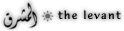

|  |
A Nobel for the Arab NationThe Watcher on the Curb
|
|
On December 8, 1988, Naguib Mahfouz's Nobel Lecture was delivered for him, in Arabic, by Muhammad Salmawi of Egypt's Ministry of Culture. Here are some excerpts.
"My talk ... comes in a language unknown to many of you, but [that language] is the real winner of the prize. It is, therefore, appropriate that its melodies should float for the first time into your oasis of culture and civilization. I have great hopes that this will not be tha last time, either, and that literary writers of my nation will have the pleasure of sitting with full merit among your international writers, who have apread the fragrance of joy and wisdom in this grief-ridden world of ours. I am the son of two civilizations that at a certain age in history formed a happy marriage. The first of these, 7000 years old, is the pharaonic civilization; the second, 1400 years old, is the Islamic one... As for Islamic civilization, I will not talk about its call for the establishment of a union of all humankind under the guardianship of the Creator, based on freedom, equality and forgiveness... I will, instead, introduce that civilization in a moving, dramatic situation summarizing one of its most conspicious traits. In one victorious battle against Byzantium it gave back its prisoners of war in return for a number of books of the ancient Greek heritage in philosophy, medicine and mathematics. This is a testimony of value for the human spirit in its demand for knowledge, even though the demander was a beliver in God and what was demanded was the fruit of a pagan civilization. In this decisive moment in the history of civilization... the human mind now assumes the task of eliminating all causes of destruction and annihilation. And just as scientists exert themselves to cleanse the environment of industrial pollution, intellectuals ought to exert themselves to cleanse humanity of moral pollution. It is both our right and our duty to demand of the greatest leaders in the civilized countries, as well as of their economists, to effect a real leap that would place them in the focus of the age... Today the greatness of a civilized leader ought to be measured by the universality of his vision and his sense of responsibility toward all humankind. The developed world and the third world are but one family; each human being bears responsibility toward it to the degree that he has obtained knowledge, wisdom and civilization. It would be exceeding the limits of my duty if I told [the leaders] in the name of the Third World: Be not spectators to our miseries... We have had enough of words. Now is the time for action." After many years of sharing one at the famous Cairo newspaper, Mahfouz has been moved into the large and comfortable office formerly occupied by the late Tawfik al-Hakim, the great playwright, which had stood empty for a year. No one was seen worthy of occupying it until Mahfouz won the 1988 Nobel Prize in Literature. This shows what one must do to get one's own of fice at Al-Ahram. Inheriting Tawfik al-Hakim's office meant joining him as one of the immortals of modern Arabic literature. That the of fice followed the Nobel Prize, however, suggests a local hesitation to place Mahfouz on a footing equal to that of al-Hakim Although Mahfouz is a superb novelist, he is not a great stylist and he does not write poetry; both are the usual criteria for literary stature in Arabic. There is, however, poetic justice in Mahfouz's being given an office to crown his success. For many of his characters Egyptian civil servants climbing the endless rungs of the bureaucracy - an office is the ultimate goal. Naguib Mahfouz, a 77-year-old retired civil servant himself, is the supreme chronicler of such aspirations. His canon of 30 novels and ten volumes of short stories, written over a period of 50 years, encompasses the whole of 20th-century Egyptian history through a multitude of characters. His work embraces the teeming mass of Egyptian society and shows that every one of its members, however poor or humble, has a story worth telling in many cases a sad, even tragic, story. The inevitable rise of the ambitious to the top of the hierarchy of Egyptian society, and the permanent place of the underclass at the bottom of it, are among the few certainties in his work. His heroes are those who try to escape from this certainty, even if they die trying - like Ibrahim, the aging of fice boy in the short story "God's World," who runs off with the salaries of the idlers in the overstaffed of fice where he works to buy for himself a few desperate days of pleasure. Though politics are as much a part of the lives of his characters as love, - death or money, Mahfouz has little faith in the power of politics to effect change. Among modern Egyptian intellectuals, this is a rare and bold position to take. The leftist literary historian Louis Awad, another Al-Ahram writer, for this reason sees Mahfouz as the least "committed" of the writers of his generation, using the term in Sartre's sense to mean philosophically and actively committed to radical social change. Many of this generation of writers, all now advanced in years, saw the possibility of rescuing the Egyptian masses from their historic poverty by political means. For them, the radical reforms introduced by Gamal Abdel Nasser, president of the Egyptian republic after the overthrow of the monarchy, held out hope. Mahfouz, instead, examined the effects on individual Egyptians of measures like Nasser's land-reform program. In most cases, he found, their lives had been thrown into chaos, their property seized, and their sense of moral purpose shattered. Politics, in Mahfouz's books, is simply another of the evils that afflict humankind, a force whose harm one may be lucky enough to avoid. Like war, it is a fog in which some triumph, others are victimized, but in which no one sees clearly. Mahfouz is a political agnostic: He writes about people, not about manifestos. To Louis Awad, Mahfouz is "a writer sitting in a cafe, who views the parade of life marching before him, watching from the curb" - not, he implies, from the barricades, as a more committed writer would. Why, Mahfouz might reply, should one believe that a single mortal can change anything in a nation with a 5000-year-old bureaucracy? Nasser, by comparison, seems only another of the passing historical disruptions that periodically disturb the calm and desperate certainty of Egyptian life. This certainty is articulated by Othman Bayyumi, the main character in the novel Respected Sir. Early in his life he is dazzled by the grand office occupied by the director-general of the government department for which he begins working as a junior clerk. He sacrifices his life to the ambition of occupying the same office himself one day. To him, the rank it represents "was a sacred occupation, like religion." Amid the trials of modern Egyptian history, only the role of the government official seems certain and permanent. The Egyptian official was the oldest in the history of civilization.... Even the Pharoahs themselves, he thought, were but officials appointed by the gods of heaven to rule the Nile Valley by means of religious rituals and of administrative, economic and organizational regulations. Ours was a valley of goodnatured peasants who bowed their heads in humility to the good earth but whose heads were raised with pride if they joined the government apparatus. Then would they look upwards to the ascending ladder of grades which reached right to the doorstep of the gods in heaven. Many of Mahfouz's novels were serialized in Al-Ahram, a paper which has played an important part in intro ducing new currents into Egyptian cultural and intellectual life (See Aramco World, September-October 1972). The novel itself, a western literary form without direct antecedent in Arabic letters, was one such current. Mahfouz's latest novel, Al-Qushtuma, named after a Cairo cafe and described by its author as "a biography of Egypt through four characters," was being serialized in Al-Ahram at the time his Nobel Prize was announced. Mahfouz's career began with a volume of short stories, followed by three novels about pharaonic Egypt written in the 1930's. Mahfouz chose the pharaonic theme because he was, like many Egyptians, profoundly inspired by the discovery, a few years earlier, of the treasures of Tutankhamen and other relics of the ancient civilization. He was so inspired that he planned a series of 40 novels set in ancient Egypt. Mahfouz wrote his three pharaonic novels during the repressive regime of Prime Minister Isma'il Sidqi. He used the historical setting as a way of describing contemporary Egyptian politics, a subject he could not have attempted safely without the protection of the veil of allegory. This is a cunning technique he also used later, in books like Miramar and The Thief and the Dogs, to criticize Nasser's rule without naming him explicitly. Mahfouz abandoned the series of 40 pharaonic novels to enter the second phase of his writing, in which he described in a starkly realistic way the lives of people living in the mazy alleys of Jamaliyya, the quarter of Cairo around the mosque and university of al-Azhar where he was born and spent his childhood. Seven novels belong to this period, three of which - Bayn al-Qasrayn (Between Two Castles), Qasr al-Shawq (The Palace of Desire), and Al-Sukariyyah (The Sugar-Bowl) - comprise the trilogy which is his masterpiece. A complete translation in English will appear later this year, while Midaq Alley and The Beginning and the End have been in English for some time. Bayn al-Qasrayn, the Egyptian author Taha Husayn wrote, "portrays a specific Egyptian environment at a specific period of this century, during and following the First World War... in which the men are ultraconservative, the women virtuous innocent and veiled, and no one has yet lived with progress. They still cling to the traditions of the pure Egyptian way of life of the previous century." Midaq Alley can be thought of as an early work in the genre of fiction known as "magic realism," which depicts incidents in the lives of ordinary people that seem almost too bizarre to be true. One Hundred Years of Solitude, by the Colombian writer and 1982 Nobel Prize winner Gabriel Garcia Marquez, is the model of this genre full of episodes one would think had been invented by a fabulist, if one did not know the culture the author is describing. In Midaq Alley, the story of Zaita, the man who maims the able-bodied so they may make a living as beggars, and who conspires with a self-taught quack dentist to extract the gold fillings from entombed corpses, would seem farfetched were it not so plausible just in that quarter, where poverty is extreme but life proceeds, against all probability, with a marvelous and unexpected verve and gaiety. The Beginning and the End recounts the trials of a family in Jamaliyya that is thrown into poverty by the death of the father. It is a powerful narrative of the forces at work in these circumstances: Loyalty to each other binds the family members together, but shame, the strongest force in their lives, ultimately leads the ambitious son to force his sister to commit suicide for having a romantic affair. Shame at his humble origins forces him to lie to improve his standing before the father of the girl he wants to marry. Shame is a two-edged sword in this fictional world, protecting the precious dignity of a family that has nothing else, but also cutting deeply into the souls of its members. The humor of Midaq Alley is nowhere in evidence here - the mood is painfully somber - but the lives of these characters seem redeemed in the telling. This phase of Mahfouz's writing was brought to a close by the Free Officers' coup of 1952 that inaugurated the era of Nasser. He stopped writing for a sevenyear period during which Egypt underwent violent internal changes, including the Suez invasion of 1956. The novel that broke this long silence was Children of Gebelawi, (Awlad Haritna in its Egyptian colloquial title), a long and profound spiritual allegory written in the stark form of myth. It was serialized in Al-Ahram in 1959, but never published as a book in Egypt, in deference to orthodox religious sensibilities; Mahfouz has since said that he would consent to its publication in Egypt only with al-Azhar's approval. He has written that the novel shows that civilization cannot be built on science alone, but that faith and moral values are also necessary to underpin it. At a time of upheaval, Mahfouz in this book returned to his own philosophical first principles. The novels that followed have never had the substance of the earlier works. Since the 1960's Mahfouz has written nearly a book a year, but they have been of mixed quality. Of those available in English, the best are Miramar, Autumn Quail, Mirrors, and Respected Sir. These books are representations of personal and political turmoil, their narratives depending on disorienting effects like unexpected shifts of person - often to suggest thoughts running through a character's mind while he is experiencing something else - that create a sense of mental dislocation. The Thief and the Dogs represents the most extensive use of these techniques. It is written as a loosely ordered stream of impressions and feelings experienced by a young man who had been active in the Arab Socialist Union - the organization established to mobilize grass-roots support for Nasser's policies - and who returns from an unjustly imposed prison sentence to take revenge on the man he feels was responsible for his arrest. He dies at the end in a shootout, flinging his soul into oblivion. The implication, powerfully but cunningly and elliptically made, is that the revolution wasted this young man and poisoned his soul through the injustice it meted out to him. Miramar, published in 1967, six years after The Thief and the Dogs, treats the Nasser era more artfully. It is the best of Mahfouz's later books, a finely wrought allegory in which Egypt is represented as a peasant girl who flees the hardship and injustice of life in the countryside to work in a boarding house in Alexandria. The guests, all of them exiles from unhappy lives themselves, vie for the last word on what is best for her, like impotent political factions competing for the right to determine the future of Egypt. If there is any stable center to the lives of the residents of the Pension Miramar, it is the weekly broadcast concerts by the great Egyptian singer Umm Kalthoum, which they all gather to hear. Only this great singer, nonpolitical and quintessentially Egyptian, can bring them together. (Mahfouz's regard for the singer is such that he named his first daughter Umm Kalthoum and his second daughter Fatima, which was Umm Kalthoum's real name. Both are names of daughters of the Prophet Muhammad.) It is ironic, given his profound disillusionment with the Nasser era, that during this time Mahfouz was, in Louis Awad's words, "made an institution by the Nasser regime. He was almost crowned by the state." In 1970, three years after the publication of Miramar, he was awarded the National Prize for Letters, and two years later the country's highest honor, the Collar of the Republic. It is significant that in none of his novels up to that point had Nasser's name been mentioned. In his Nobel Prize lecture, delivered in Stockholm by his friend Muhammad Salmawi, a deputy minister at the Egyptian Ministry of Culture, Mahfouz paid tribute to acts of justice and wisdom in the annals of pharaonic and Islamic history, and held these up as the great examples that these civilizations offer the world, rather than their achievements in architecture or on the battlefield. "One day the Great Pyramid will disappear too," he wrote, "but truth and justice will remain for as long as mankind has a thoughtful mind and a living conscience."
|
|
WRITTEN BY EDWARD FOX (From the ARAMCO WORLD MAGAZINEMarch-April 1989) Edward Fox, an Aramco writer based in Dhahran, holds a master's degree in Middle Eastern studies from Columbia University.
Saudi Aramco, the oil company born as a bold international enterprise more than half a century ago, distributes Aramco World to increase cross-cultural understanding. The magazine's goal is to broaden knowledge of the Arab and Muslim worlds and the history, geography and economy of Saudi Arabia. Aramco World is distributed without charge, upon request, to a limited number of interested readers. Address editorial correspondence to: The Editor, Aramco World, Post Office Box 2106, Houston, Texas 77252-2106, USA. Send subscription requests and changes of address to: Aramco World, Box 469008, Escondido, California 92046-9008, USA.
|
|
Created 970213/ Last modified: Thu Feb 13 14:12:11 MET 1997 |